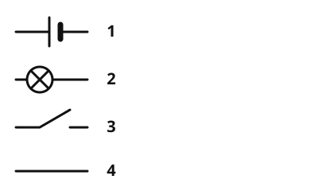

Schalter und Schaltzeichen
Die Idee
Wer einen Stromkreis aufschreiben will, muss keine Kabel und Lampen malen. Es gibt für jedes Bauteil ein kurzes Schaltzeichen. So lesen Menschen auf der ganzen Welt denselben Plan.
Das merkst du dir
- Schalter
Ein Schalter öffnet oder schließt den Stromkreis. Geschlossen fließt der Strom, offen fließt keiner.
- Schaltplan
Ein Schaltplan zeigt einen Stromkreis mit Schaltzeichen statt mit Zeichnungen der Bauteile.

Die wichtigsten Schaltzeichen. Beim offenen Schalter ist die Linie unterbrochen, beim geschlossenen durchgehend. Beschriftung: 1 Batterie, 2 Lampe, 3 Schalter offen, 4 Schalter geschlossen.
Quelle: https://github.com/lernapps/elektrizitaet. Lizenz: CC0-1.0.| Bauteil | So erkennst du das Schaltzeichen |
|---|---|
| Batterie | zwei Striche, ein langer dünner und ein kurzer dicker |
| Lampe | ein Kreis mit einem Kreuz darin |
| Schalter offen | eine Linie mit Lücke; der Strom fließt nicht |
| Schalter geschlossen | eine durchgehende Linie; der Strom fließt |
Beispiel
Ein Schaltplan in Worten
Ein Schaltplan zeigt: Batterie, dann ein Schalter, dann eine Lampe, dann zurück zur Batterie. Ist das Schaltzeichen des Schalters durchgehend, ist der Schalter geschlossen und die Lampe leuchtet. Zeigt es eine Lücke, ist er offen, und die Lampe bleibt dunkel.
Übung
Lösung
Richtige Antwort: ein Kreis mit einem Kreuz – Lampe; zwei Striche, ein langer und ein kurzer dicker – Batterie; eine Linie mit Lücke – offener Schalter
Der Kreis mit Kreuz steht für die Lampe, die zwei Striche für die Batterie, und die Lücke in der Linie zeigt einen offenen Schalter.
Mehr dazu:
Lösung
Richtige Antwort: Die Aussage stimmt nicht.
Die Lücke bedeutet, dass der Kreis dort unterbrochen ist. Der Schalter ist offen, und es fließt kein Strom.
Mehr dazu:
Lösung
Er ist geschlossen. richtige Antwort
Nur wenn der Schalter geschlossen ist, ist der ganze Kreis geschlossen, und der Strom kann fließen.
Er ist offen.
Bei offenem Schalter ist der Kreis unterbrochen, und die Lampe bleibt dunkel.
Das kann man nicht sagen.
Doch. Leuchtet die Lampe, muss der Kreis überall geschlossen sein, auch am Schalter.
Die Lampe leuchtet nur, wenn der Strom durch den Schalter fließen kann. Also muss er geschlossen sein.
Mehr dazu: